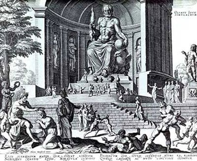

Antikçağ Yunan mitolojisinde aşk ve güzellik tanrıçası olarak tapılan Afrodit’nin kökeni doğu mitolojisine dayanır ve verimlilik tanrıçasıdır. Romalılar ona Venüs ismini vermişlerdir. Olimpos’un önemli tanrıçalarından biri olan Afrodit’nin Eros, Anteros, Himeros, Pathos, Peito, Himeneo, Aineias, Enea v.b. gibi pek çok çocuğu olmuştur. Zira yaşamın en güçlü güdüsü aşkın ve güzelliğin yöneticisi Afrodit gerek ölümlülerin gerekse tanrıların karşı koyamadığı bir yaşam prensibinin yöneticisi idi.
Evrende her şey aşktan doğar. Üretkenlik ve yaşamın anlamını oluşturan, canlıların yaşam enerjisidir aşk... O var oluşun temel prensibi ve sürekliliğin sayan yegâne oluştur. Aşk olmadan üretkenlik, canlılık ve yaşamın devamı mümkün değildir. Canlıların yaşam gerekçesini oluşturan ve ona anlam katan yegâne duygusudur aşk. Hayatı anlamlandıran bütün iyicil duygular; mutluluk, neşe, şefkat, sadakat, bağlılık, fedakârlık, üretkenlik, azim, zorluklara dayanma gücü vs. ondan türemiştir. Aşk olmadan yaşamı anlamlı kılan hiçbir duygu ayakta kalamaz. Bu nedenle aşk düzenleyici ve yaşama sistem kazandıran prensiptir. Aşkın bütün halleri yapıcı, kurucu ve sürdürücü özellik taşırken, aşkın bittiği noktada yok edici ve kaosa yol açan duygular ortaya çıkar. Kin, düşmanlık, kötülük, ölüm, savaş, kaos ve çatışma; hepsi aşkın yok olduğu noktada ortaya çıkan duygulardır. Bu anlamda aşk yaşamı, aşkın bitiş hali ise ölüm ve yok olmayı temsil eder. Aşkı yöneten tanrıça olarak Afrodit böylesi yaşamsal bir öneme sahiptir.
Afrodit’nin diğer Olimpos tanrı ve tanrıçalarından ayırt edici bir özelliği, yalnızca ölümlülerin yaşamına hükmeden doğa güçlerini değil, tanrıların da muhtaç olduğu bir gücü temsil etmesidir. Gerçi, kimi zaman tanrı ve tanrıçalar da diğer tanrıların temsil ettikleri güçlere gereksinim duyarlar ancak, bu gereksinme tanrıların var oluşunu belirleyen bir ihtiyaçtan kaynaklanmaz; kimi zaman insanların işlerine karıştıklarında, diğer tanrıçaların desteğine ihtiyaç duyduklarında ortaya çıkan bir yardımlaşmadır bu. Ama aşk ölümlüler kadar ölümsüzlerin de varlığından kaçamayacağı, dahası onunla tanrısal varlığına anlam aradığı bir duygudur. Bu bakımdan Olimpos tanrıları, yaşamların aşk üzerine kurmuş gibidir. Olimpos’ta kendi evreninde yaşayan tanrılar, sık sık karşı cinsten tanrılara, kâhinlere, perilere, ölümlü insanlara âşık olurlar. Güzel olan her şey tanrıların da -bütün tanrısal güçlerine rağmen- muhtaç olduğu yaşam kaldıraçlarıdır. Tanrıların tanrısı Zeus bile çapkınlıkta o kadar ileri gider ki, ölümlü güzelleri bile baştan çıkarmak için bin bir çeşit yol deneyerek duygularını tatmine çalışır. Bütün tanrı ve tanrıçalar -bakirelik sözü veren bir iki tanrı istisna- mutlaka bir peri, kâhin, ölümlü ya da tanrıya âşık olma ihtiyacı duyarlar. Sonsuza dek bakire kalmaya söz veren av tanrıçası Artemis bile kendini bu duygudan azade kılamaz.
Ölümlü varlıklar (krallar, kraliçeler, prensesler, kahramanlar ve sıradan insanlar) ise âşık oldukları sevgililerini elde etmek ya da onların gönlünü fethetmek için sık sık Afrodit’ye kurban adayıp dua ederler. Zira muratlarına ermenin, sevgililerine kavuşmanın biricik yolu, Afrodit’nin gönlünü hoş tutmaktan geçer. Aynı şey, kâhinler, periler ve yarı-tanrı varlıklar için de geçerlidir.
Böylesine önemli bir yaşam prensibini temsil eden Afrodit, tanrı ve tanrıçalar içinde seçkin bir yere sahiptir. Afrodit aşkın hem olumlu/ödüllendiren hem de olumsuz/cezalandıran gücünü yönetir. Dostlarının ve kendisine dua edenlerinin elde etmek istediği sevgililerin gönlüne aşk düşürerek, onları ödüllendirir. Afrodit’nin bu yapıcı gücü, yaşamın üretkenliğini de temsil eder. Onun aracılık ettiği birleşmelerden dünyaya gelen çocuklar, ülkeler yönetirler. Tüm yaşamı azapla geçen varlıkları o, aşk duygusu ile sağaltır. Öyle ki, aşk bu yüzden doğanın da canlılık prensibidir. Bu yüzden aşkını kavuşma hali ilkbaharla, bitiş hali ise kışla temsil edilir. İlkbaharda aşka gelen doğa, bu mutluluk ile yeşillerini, allarını takar takıştırır. Kuşlar, böcekler, kelebekler, ceylanlar, geyikler, aslanlar; kısacası envai çeşit hayvanat neşe ve mutluluk içinde sevdiğine koşar. Ağaçlar, aşkın yol açtığı mutlulukla çiçeklerle donanır. Doğa meyveye, yemişe durarak en cömert ve anaç haliyle bağrında yaşayan türlü çeşit varlıkları besler. Bu yüzden tarihin eski çağlarından beri ilkbahar bir aşk mevsimi olarak anılır.
Aşkın cismani hali güzelliktir. Güzel olan, etrafındaki tüm varlıkları kendine çeker. Güzellik aşkın vücuda geldiği beden gibidir. Güzelliğin kendisi o kadar tılsımlı ve çekicidir ki, tanrılar bile kendi yarattıkları güzellik karşısında dize gelmekten kendilerini alıkoyamazlar. Bu yüzden Zeus sık sık ölümlü kraliçelere ya da prenseslere âşık olup kimi zaman boğa, kimi zaman kuğu kuşu kılığında onları baştan çıkartmaya çalışır. Pan bu yüzden subaşlarında perileri izleyip, onları bir kuytuda sıkıştırır ve onlara sahip olmaya çalışır.
Afrodit aşkın yanında güzelliğin de temsilcisidir. Evrendeki bütün varlıklar güzelliklerini ondan alırlar. Güzellik tanrıçası olarak Afrodit, aynı zamanda evrenin en güzel tanrıçasıdır. O kadar güzeldir ki, evrendeki bütün güzel şeyler onun güzelliğinin bir yansıması gibidir. Yıldızların parlaklığı Afrodit’nin gözlerindeki ışığın bir gölgesidir sadece. Ayın ve bulutların beyazlığı onun tenini beyazlığına benzer. Doğurgan toprak, Afrodit’nin besleyen ve koruyan geniş kalçaları ile özdeştir. Afrodit’nin bu güzelliği tanrıları büyülerken tanrıçaları adeta kıskançlık nöbetlerine sokar. Ona aşık olmayan tanrı nerede ise yok gibidir. Savaş tanrısı Arres, denizlerin tanrısı Poseidon, demir ve madenlerin çirkin tanrısı Hephaistos, güneş tanrısı Apollon; hatta tanrıların tanrısı Zeus bile ona aşıktır. Afrodit, aşık eden kuşağını beline taktığında ona aşık olmayan ölümlü ya da ölümsüz varlık yok gibidir.

Yunan tanrılarının toplu olarak resmedildiği bir çalışma.
Onun bu büyüleyici güzelliği, Olimpos’un diğer tanrıçaları arasında her zaman kıskançlık nedeni olmuştur. Bu yüzden Baştanrıça Hera ve akıl tanrıçası Athena onun güzelliğini kıskanıp onunla rekabet ederler. Meşhur Troya savaşının çıkışı da tanrıçalar arası bu rekabetten kaynaklanmıştır. Hera onun bütün büyüsünün belindeki kuşağında olduğunu düşünerek bu kuşağı ele geçirmek ister. Ancak aralarındaki tüm rekabete rağmen kimi zaman Hera bile Afrodit’nin temsil ettiği güce ihtiyaç duymaktan kaçınamaz. Baş tanrıça olduğu halde “Altın Post” efsanesinde olduğu gibi Afrodit’den yardım ister.
Aşk ve güzelliğin yapıcılığı, Afrodit elinde kimi kez yok edici ve ölümcül bir karaktere de dönüşebilir. Bu da aşkın acı yüzünü temsil eder. Zira aşk her zaman sevgililerin kavuşması ile doruğa ulaşan mutluluk müjdecisi değildir. Kimi zaman da hayatın en büyük acıları, ölümcül yaraları, bir ömrü heder eden gazapları, vicdan azapları ondan türer. Yaşamdaki en büyük acı sevip de kavuşamamanın doğurduğu acıdır. Sevgilinin başka biriyle evlenmesi, aşk duygusuna kalbinin kapılarını kapaması ya da vakitsiz bir şekilde Tartaros’a (ölüler ülkesi) gitmesi seven için katlanılmaz bir acıdır. Bu acı öylesine vahşi ve sınırsızdır ki, bir gecede sevenin saçlarını yün yumağına çevirip, en yakışıklı ve en güçlü kahramanları yataklara düşürüp ölümün koynuna atılmalarına yol açabilir. Afrodit aşkın acı niteliğini de cezalandırma ve lanetleme metodu olarak kullanır. Cezalandırmak istediği birinin gönlüne düşürdüğü umutsuz aşk, en büyük azaba yol açar. Kendi kültünü tanımayan ya da ona dua etmeyen milletlerin kralları ya aşksızlıkla ya da umutsuz aşkla cezalandırılarak gazaba uğrar.
Aşkın acı özelliği doğada kışla sembolize edilir. Ayrılık, kavuşamamak, ölüm duygusuna benzer çünkü. Kış mevsimi ise doğanın ölümüdür. Bu mevsimde ağaçların yemişleri tükenir, yaprakları solar, dalları kurur. Karlar altında kalan toprak semeresini vermeyerek uykuya çekilir. Vahşi hayvanlar açlık tehlikesi ile karşı karşıya kalarak birbirlerine saldırmaya başlar. Gökyüzünde güneş yakıcı ışıklarını toprağın yüzünden çekerek soğuk rüzgarlara yol açar. Fırtınalar, boranlar, tipi, kasırga, denizlerin kudurması hep bu mevsimde olur. Bu mevsimde aşkın üretkenliği, doğurganlığı, yaşamı temsil eden iyicil duyguları yok olur. Tıpkı doğada kışın olduğu gibi sevenin de yüreği buz keser, acı veren ve üşüten bir duygu örtüsü ile kaplanır.
Afrodit, aşkın olağan doğası gereği daima gülümser, etrafına güzel duygular aşılar. Her şeye sevgi ile bakar. Bu durum onun cazibesini daha da artırır. Ancak tıpkı aşk da olduğu gibi onun bir de kıskanç ve intikamcı yüzü vardır ki, sevgi ve aşkta ne kadar yüce gönüllü ise kıskançlık, hırs ve intikamda da o kadar acımasızdır. Afrodit bütün ölümsüzler içinde en güzelinin kendisi olduğunu düşünür. Onunla yarışan ölümlü ölümsüz herkesi mağlup etmeye çalışır. Bu güzellik yarışında genellikle bir ölümlü hakem olur. Athena ve Hera ile yaptığı güzellik yarışında hakem, baş tanrı Zeus’un önerisi ile Paris olmuş, yarışmada Hera, Athena ve Afrodit Paris’e türlü rüşvetler teklif etmiş bu rüşvetler içinde Paris Afrodit’nin rüşvetini (Menelaos’un güzel karısı Helen) kabul ederek en güzel tanrıça onu seçmiştir.
Afrodit kendisini kıskanan, sevgilileri ile yatan ya da kendi kültüne biat etmeyen herkesi acımasızca cezalandırmaktan geri durmaz. Yöntemleri o kadar gaddarcadır ki, kimi zaman umutsuz bir aşk göndererek, kimi zaman parça parça olmasına yol açarak kimi zaman da yeteneklerini yok ederek alır hasmından intikamını... Örneğin üç kharitlerle ( Pasithea, Kale ve Euryphosyne) yaptığı güzellik yarışmasında hakem olan olan Teiresias, Afrodit’nin tanrıça olmasına aldırış etmeden Kale’yi ‘en güzel’ seçince Afrodit, Teiresias’ın saçlarını oracıkta bembeyaz ederek yaşlandırmıştır. Kendi güzelliğini Afrodit’nin güzelliği ile mukayese eden Miletos kralının kızı Pskykhe’yi ise dünyanın en çirkin canavarına aşık etmek istemesi de yine nasıl bir güzellik kompleksine sahip olduğunu göstermektedir.
Afrodit sevgililerini de kimse ile paylaşmak istemez. Sevgilisi Ares’e aşık olup onunla birlikte olan gül parmaklı Eos’u sürekli aşık olma cezası ile cezalandırır. Bundan sonra önüne gelen aşık olan Eos’un sevgilileri Afrodit tarafından kaçırılarak Eos, bitmek bilmeyen bir azaba mahkum edildi.
Kimi zamanda Aprodite’nin sevgilileri kıskançlığın kurbanı haline gelerek başka tanrılar tarafından cezalandırılmak istenmiştir. Bu halde Afrodit elinden geldiği kadar sevgililerini korumak ve tanrılarını gazabından kurtarmak ister. Ankhises’le Afrodit’in aşkı bunun somut bir örneğidir. Afrodit ile yatan ölümlü Ankhises’i kıskanan tanrıların tanrısı Zeus, onu cezalandırmak için ölümcül şimşeklerini üzerine salmış fakat Afrodit şimşeklerin yönünü sapıtarak sevgilisini kurtarmıştır. Ancak bu olayın şoku ile Ankhises bir daha ayağa kalkamamıştır.
Afrodit’nin en önemli özelliklerinden biri de kendi tanrısal güçlerini yok sayan ya da aşka kendini kapatanların bu tavrını itaatsizlik sayarak cezalandırmasıdır. Örneğin av tanrıçası Artemis ile bu yüzden iyi geçinemez. Ömrü boyunca evlenmeyeceğine söz veren koşuda yenilmez Atalanta’yı bir planla yenilgiye mahkum edip Melaino’la evlenmek zorunda bırakmasının sebebi de budur.
Afrodit sadece insanlar arasında aşkı yasaklayanları değil, hayvanlar arasında aşka yasak koyanları da cezalandırmıştır. At yetiştirici Glaukos’un cezalandırılması buna örnektir. Glaukos yarışa soktuğu atlarının güçten düşmeyip birinci gelmesi için cinsel ilişki geliştirmesini yasaklamış; bunu tanrısal gücüne bir hakaret olarak algılayan Afrodit, Glaukos’u bizzat kendi atlarına sürükleterek param parça etmiştir.
Afrodit bunu yanı sıra sevgilileri ile yakalandığında utanmayı da bilen bir tanrıçadır. Nitekim ölümsüzlerin en çirkini maden ve demir tanrısı Hepheistos onu bir oldubitti ile karısı haline getirince Afrodit bu evliliğe isteksiz olsa da boyun eğmiş ama Hephaistos’u aldatmaktan da geri durmamıştır. Karısının savaş tanrısı Ares ile aşk yaşadığından kuşkulanan Hephaistos, demirden bir ağ örerek Ares ile karısını çırılçıplak yakaladığında utançtan yerin dibine giren Afrodit hemen Olimpos’u terk ederek Kıbrıs adasında inzivaya çekilmiştir.
Aşk ve güzellik tanrıçası Afrodit, cinsel birleşmeyi temsil eden Eros ile sürekli birliktedir. Eros bir tanrı olmasına rağmen Olimpos tanrıları arasında önemli bir karakter değildir. Daha ziyade Afrodit’nin bir gölgesi gibidir. Afrodit kimi zaman Eros’u tanrısal güçlerini göstereceği zaman harekete geçirir.
Afrodit Olimpos tanrıları içinde seçkin bir yer sahip olmasına rağmen Afrodit’nin ana kahramanı olduğu mitoz sadece üç tanedir. Bunlardan biri Afrodit’nin köpüklerden doğuş efsanesi diğeri Ares ile sevişirken Hephaistos tarafından görünmez ağlarla yakalanmasının anlatıldığı efsane öteki ise tanrıçalar arasındaki güzellik yarışmasının yapıldığı efsanedir. Diğer bütün efsanelerde Afrodit önemli bir yer tutmasına rağmen her zaman başka ölümlü ve ölümsüzlerin işlerine karışan ve olayların gidişatına yön veren müdahaleleri yapan yardımcı karakterdir. Bunun en önemli nedeni aşkın yaşamda değişik olaylar silsilesi içinde vücuda gelmesidir. Nitekim Afrodit’nin ismi birçok Yunan mitozunda geçer ve olayın genel örgüsü içinde kahraman olarak başrol üstlenmese bile olayların düğüm ya da çözüm aşamalarında belirleyici müdahaleyi yapar. Bu bakımdan Afrodit’nin tanrısal yaşantısı ancak başka mitozların içinden okunarak anlaşılabilir.